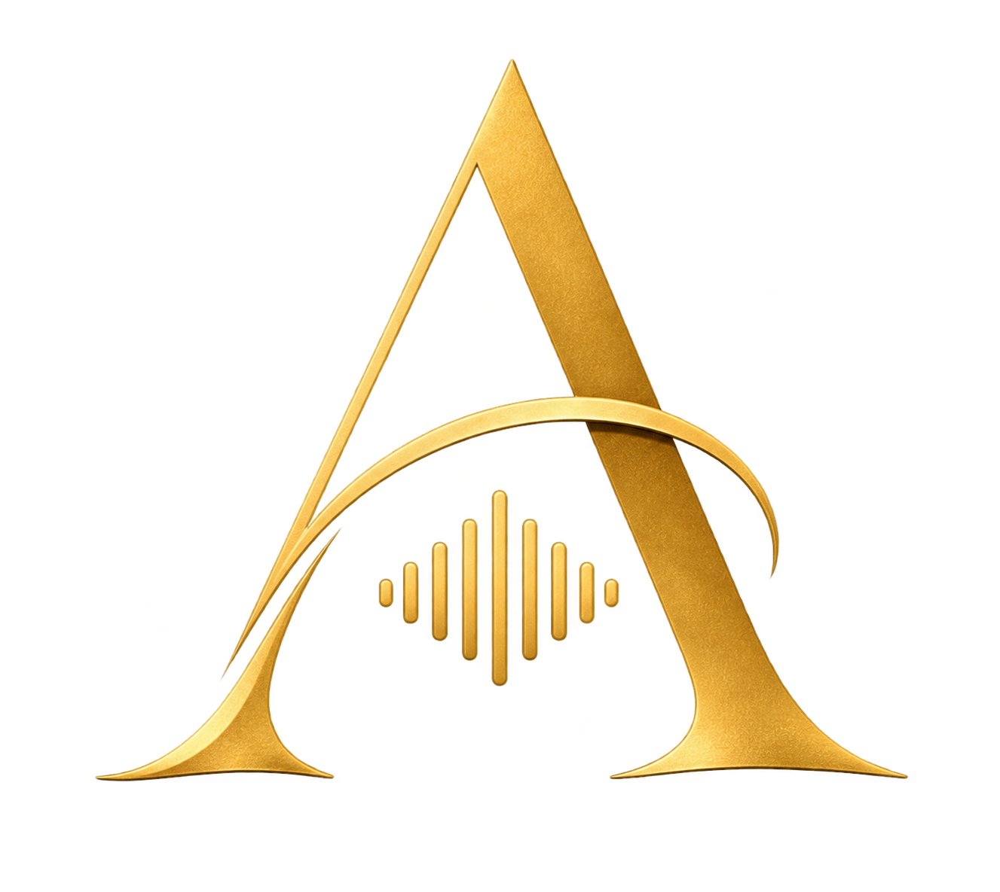
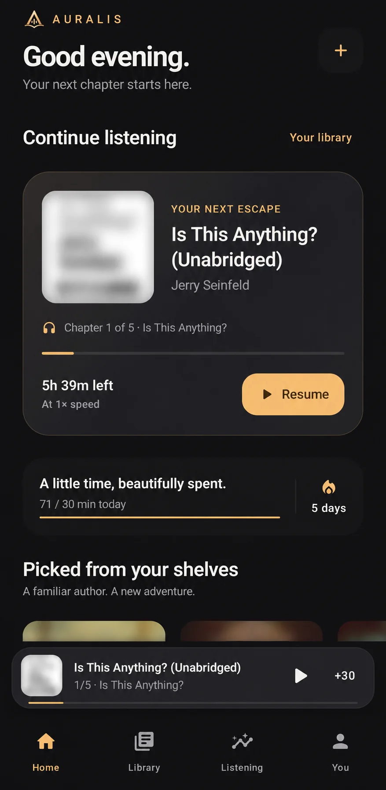
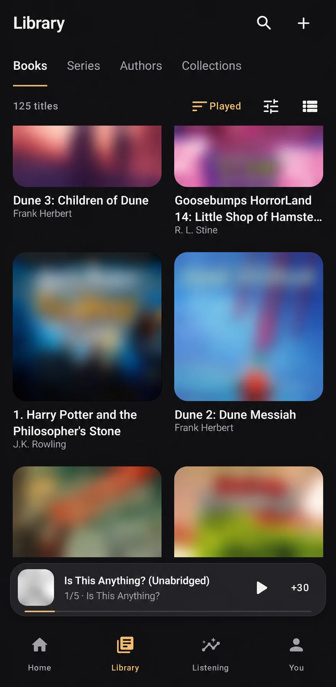
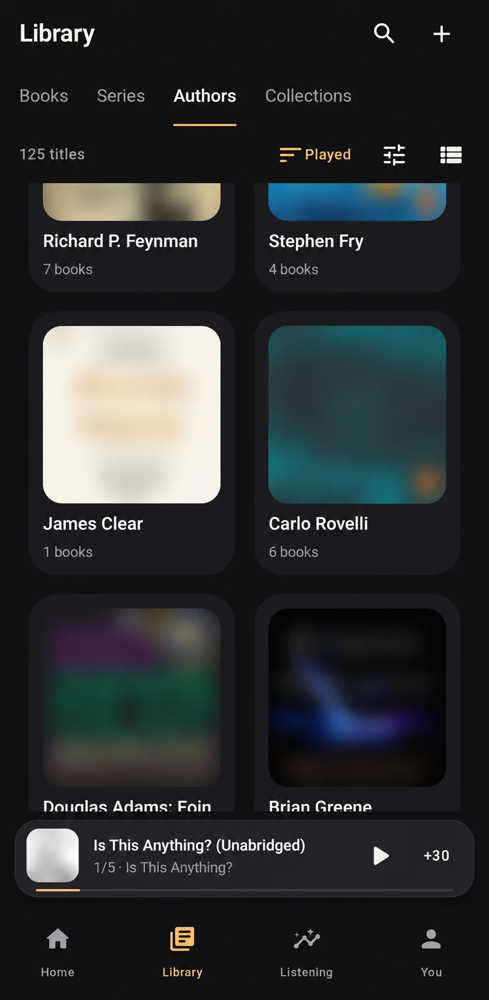
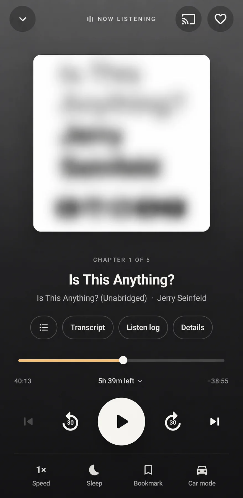
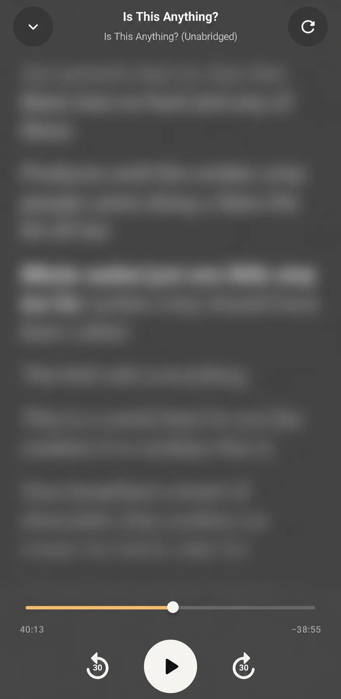
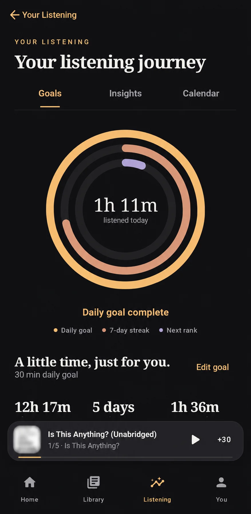
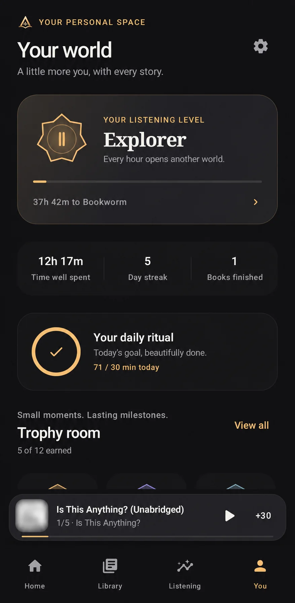

Your own library
Import audiobooks from device storage with Android’s file picker. Organize books, series, authors and collections, and edit the details.

AURALISYour books. Your world.
I vibe-coded Auralis because I wanted a calm, personal audiobook player for the books already on my devices. It plays local files, works offline for the essentials, and keeps your listening history on your phone.
A few screens from the app, including the player and its interactive transcript. Book artwork and identifying text are blurred in these previews.







Import audiobooks from device storage with Android’s file picker. Organize books, series, authors and collections, and edit the details.
Background playback, chapter controls, adjustable speed, bookmarks and a sleep timer help you settle into a story.
Generate a time-synced English transcript on your device, follow the words in the player and tap a line to seek. You can also import SRT or VTT captions. The speech model needs a one-time download; voice grouping is an estimate, not character identification.
Local listening stats, goals, streaks and achievements turn real listening into a personal record—without an account.
Auralis is a vibe-coded solo project. I’m learning as I build it, and the code, known limitations and issue tracker are public.
Playback and your library stay on-device. Optional features such as Cast or online book details need a network connection.
Try it with your own books, then let me know what works, what feels rough, and what you’d improve.